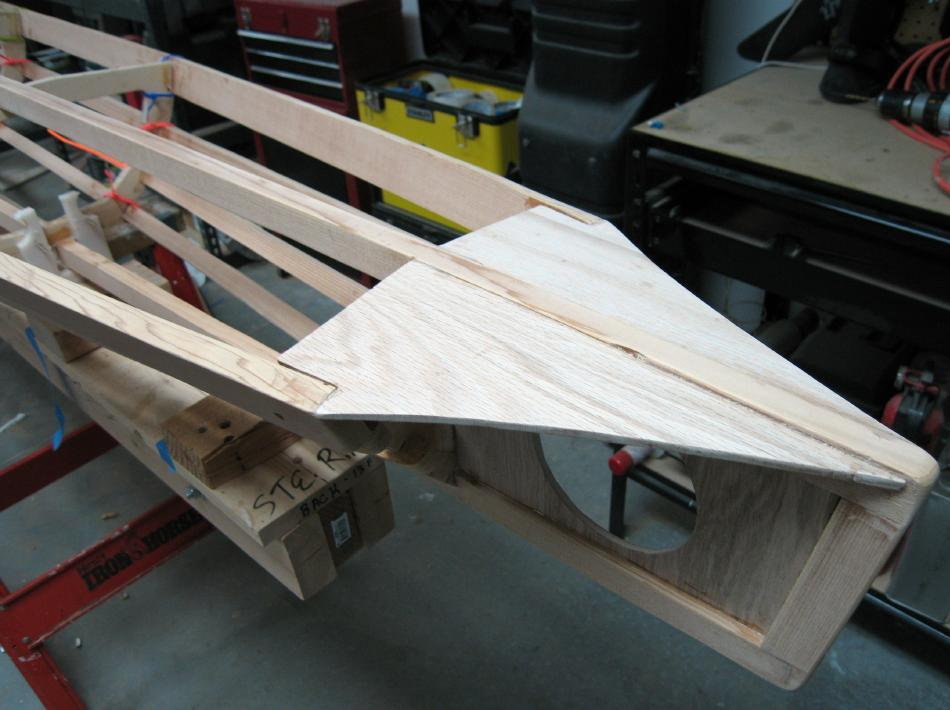

| Nikumi (Wood Frame Baidarka) | Menu Previous Page Next Page |
|

The stern consists of plywood ( 1/4") top and center plates. A lightening hole is cut out of the center plate. Note the plastic ties used to tightly secure the stringers to the cross sections while gluing with West System Epoxy and 406 filler. The following Link contains 16 additional pages of offsets, drawings, and pics of "Nikumi" and "Nikumi 19" construction pics.
Use the {BACK} key to return. |
|